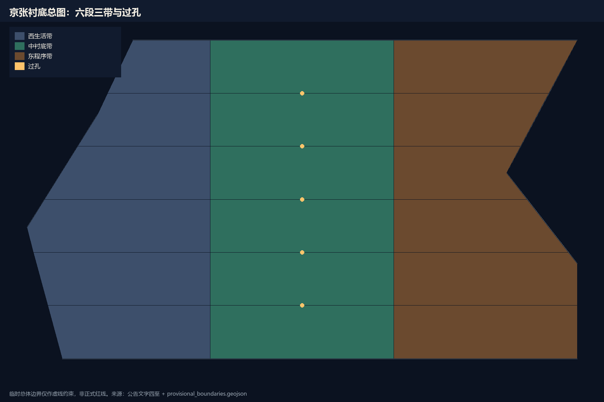

总览地图
总览地图 把已建成遗址公园当作衬底，而不是再画一条纪念轴。
Jing-Zhang Substrate · offline board
概念建议 / conceptual suggestion. Provisional geometry only. Rewrite the metal, keep the die.

总览地图 把已建成遗址公园当作衬底，而不是再画一条纪念轴。
三层范围 43.6 / 11.4 / 368.4 只回答网络、总线和硬核，不把文字四至写成红线。
重点区域 众智园是计算核，原点是主机接口，大钟寺是南桥。
用地分区 六段三带：西生活、中衬底、东程序。
交通慢行 慢时钟走公园和过孔，快时钟只在接驳线上交换。
蓝绿公共空间 中带是地平面，过孔是有人值守的公共房间。
建筑 概念体量只标位置，不做高度或容积率结论。
更新项目 六个工作包对应 G0 到 G3 四道门。
AI 场景 十二张场景卡全部带 AI 关闭等价路径。
核心指标 面积、绿地率、公共空间率由几何复算。
任务覆盖 agent.1 至 agent.6 与公告 1.3–1.5 已挂接。
自检状态 四门本地自检通过后写入。
来源 公告、任务书、临时边界与公开标准快照。
假设 官方红线、控规、权属和市政容量待正式数据补齐。